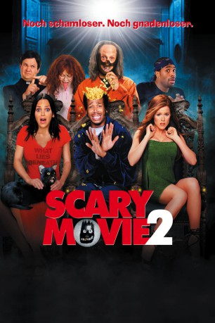

#10376 Scary Movie 2
 
 IMDB-Wertung: 5.3 / 10
IMDB-Wertung: 5.3 / 10  Tomatometer: 15
Tomatometer: 15  Metascore: 29
Metascore: 29 
Eine Gruppe von Studenten verbringt auf Einladung des vordergründig charmanten Geisteswissenschaftlers Prof. Oldman ein Wochenende in einer berühmt-berüchtigten Spukvilla namens "Hell House", um ein paar nicht genauer definierte Schlafexperimente durchzuführen. Natürlich führt der suspekte Oldman alles andere als seriöse Wissenschaft im Schilde, wenn er seine Schutzbefohlenen einem groben Poltergeist und seinen dämonischen Heerscharen sozusagen auf dem Silbertablett serviert.
Jahr: 2001
Dauer: 82 Minuten
FSK: 16
Land: USA Studio: Dimension FilmsTonspuren: DTS - ,
Untertitel:
Auflösung: 1080p (1920x1080) Größe: 7229 MB
Genre: Komödie
Regisseur:  Keenen Ivory Wayans
Keenen Ivory Wayans
Drehbuch: Shawn Wayans, Marlon Wayans, Buddy Johnson, Phil Beauman, Jason Friedberg
Soundtrack: Mark McGrath
Darsteller:
- Bradley Fisher als Exorcist Party Goer
- Suzanne O'Donnell als Exorcist Party Goer
 Veronica Cartwright als Mother
Veronica Cartwright als Mother Andy Richter als Father Harris
Andy Richter als Father Harris Natasha Lyonne als Megan
Natasha Lyonne als Megan James Woods als Father McFeely
James Woods als Father McFeely Anna Faris als Cindy
Anna Faris als Cindy Marlon Wayans als Shorty
Marlon Wayans als Shorty Christopher Masterson als Buddy
Christopher Masterson als Buddy- Shawn Wayans als Ray
- James DeBello als Tommy
 Regina Hall als Brenda
Regina Hall als Brenda- Tori Spelling als Alex
 Tim Curry als Professor
Tim Curry als Professor David Cross als Dwight
David Cross als Dwight Kathleen Robertson als Theo
Kathleen Robertson als Theo Vitamin C als Vitamin C
Vitamin C als Vitamin C- Matt Friedman als Bird
 Chris Elliott als Hanson
Chris Elliott als Hanson Richard Moll als Hell House Ghost
Richard Moll als Hell House Ghost- Beetlejuice als Shorty's Brain
- Clifford Minkoff als Cop (uncredited)
- Antony Acker als Exorcist Party Goer
- Mark Barrett als Exorcist Party Goer
- Richard Bellos als Exorcist Party Goer
- Suzanne Bianqui als Exorcist Party Goer
- Natale Bosco als Exorcist Party Goer
- Joann Connor als Exorcist Party Goer
- Kristi Pearce als Exorcist Party Goer
- Donna Silverberg als Exorcist Party Goer
- Helene Strayer als Exorcist Party Goer
- Lee R. Mayes als Hip Exorcist Party Goer
- Robert Schimmel als Cab Driver
- Cordelia Reinhard als Father Harris' Mother
- Suli McCullough als Clown
- Jennifer Curran als Siren
Datei: X:\5-Pentalogie(A-Z)\Scary Movie\Scary Movie 2 (2001, FSK16, 1920x1080).mkv seit 02.01.2019
Festplatte: HD Collection-3(N-Z)-6(A-Z)
 Es gibt insgesamt 8 Filme in der Gruppe '5-Pentalogie(A-Z)\Scary Movie'
Es gibt insgesamt 8 Filme in der Gruppe '5-Pentalogie(A-Z)\Scary Movie'